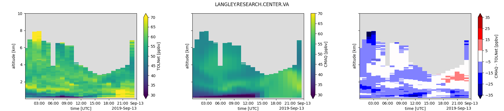
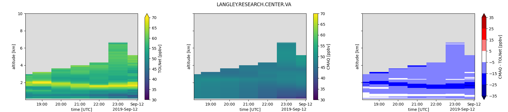
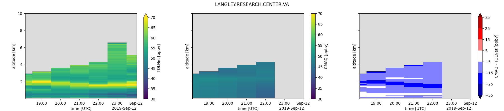

Note
Go to the end to download the full example code.
TOLNet Ozone CMAQ Comparison Plot¶
This example shows how to compare TOLNet to CMAQ by interpolating CMAQ to the. TOLNet grid. It uses NASA LaRC data during FIREX-AQ as an example with EQUATES CMAQ from pyrsig. You can adapt the example to use your CMAQ on local disk.
Install pytolnet if not avail¶
# !python -m pip install git+https://github.com/barronh/pytolnet.git
Initialize API and Find Data¶
import pytolnet
import pyrsig
import pandas as pd
import pyproj
import numpy as np
import matplotlib.pyplot as plt
api = pytolnet.TOLNetAPI()
# Find newest data from UAH
cldf = api.data_calendar('NASA LaRC')
daysdf = cldf.query(
'start_date >= "2019-09-09 00:00:00"'
+ ' and start_date < "2019-09-13 00:00:00"'
+ ' and regular_id == regular_id' # don't return missing
)
Retrieve TOLNet Data¶
tdss = []
for id, row in daysdf.iterrows():
tdss.append(api.to_dataset(row['regular_id']))
Retrieve CMAQ Data¶
ilat = tdss[0].instrument_latitude # Use first file for
ilon = tdss[0].instrument_longitude # instrument location
bbox = (ilon - 0.1, ilat - 0.1, ilon + 0.1, ilat + 0.1)
rsig = pyrsig.RsigApi(bbox=bbox)
qdss = []
for id, row in daysdf.iterrows():
bdate = pd.to_datetime(row['start_date'])
# Use RSIG to get EQUATES Simulations for comparison
qds = rsig.to_ioapi('cmaq.equates.conus.conc.O3', bdate=bdate)
zds = rsig.to_ioapi('cmaq.equates.conus.conc.ZH', bdate=bdate)
qds['ZH_ASL_MID_KM'] = (zds['ZH'] + qds['ELEVATION']) / 1000.
# Optional, use local data instead of pyrsig
# qds = pyrsig.open_ioapi(f'./CCTM_CONC_{bdate:%Y%m%d}')
# zds = pyrsig.open_ioapi(f'./METCRO3D_{bdate:%Y%m%d}')
# gds = pyrsig.open_ioapi(f'./GRIDCRO3D_{bdate:%Y%m%d}')
# qds['ZH_ASL_MID_KM'] = (zds['ZH'] + gds['HT']) / 1000.
qdss.append(qds)
Interpolate CMAQ to TOLNet¶
qproj = pyproj.Proj(qdss[0].crs_proj4) # Use first CMAQ for projection info
ix, iy = qproj(ilon, ilat)
for qds, tds in zip(qdss, tdss):
# Make a placeholder for interpolated data
tds['CMAQ_O3'] = tds['derived_ozone'] * np.nan
tds['CMAQ_O3'].attrs.update(units='ppbv', long_name='CMAQ')
# Find nearest grid cell and interpolate time
tsmatch = qds.sel(
ROW=iy, COL=ix, method='nearest'
).interp(TSTEP=tds['time'])
# For each time-step, interpolate from ZH coordinate to altitude
for ti, t in enumerate(tsmatch.time):
ts = tsmatch.sel(time=t)
# Interpolate along altitude in meters above sea level
tds['CMAQ_O3'][ti] = np.interp(tds.altitude, ts.ZH_ASL_MID_KM, ts.O3)
Plot a Day¶
norm = plt.Normalize(30, 70)
cmap = 'viridis'
dlevels = [-35, -25, -15, -5, 5, 15, 25, 35]
dcmap = 'seismic'
gskw = dict(left=0.05, right=0.99)
for tds in tdss:
sdate = pd.to_datetime(tds.attrs['start_data_date'])
edate = pd.to_datetime(tds.attrs['end_data_date'])
loc = tds.attrs['DATA_LOCATION']
tds = tds.groupby(tds.time.dt.floor('1h')).mean()
Z1 = tds.derived_ozone.T * 1
Z1.attrs.update(long_name='TOLNet', units='ppbv')
Z2 = tds.CMAQ_O3.T.where(~Z1.isnull())
dZ = Z2 - Z1
dZ.attrs.update(long_name='CMAQ - TOLNet', units='ppbv')
fig, axx = plt.subplots(
1, 3, figsize=(18, 4), sharex=True, sharey=True, gridspec_kw=gskw
)
qm = Z1.plot(ax=axx[0], norm=norm, cmap=cmap)
Z2.plot(ax=axx[1], norm=norm, cmap=cmap)
dZ.plot(ax=axx[2], levels=dlevels, cmap=dcmap, extend='both')
axx[0].set(xlim=(sdate, edate)) # show only hours with valid TOLNet data
plt.setp(axx, facecolor='gainsboro', xlabel='time [UTC]')
fig.suptitle(loc)
fig.savefig(f'EQUATES_TOLNet_{loc}_{sdate:%Y-%m-%d}.png')
- 
- 
- 
Total running time of the script: (0 minutes 24.382 seconds)